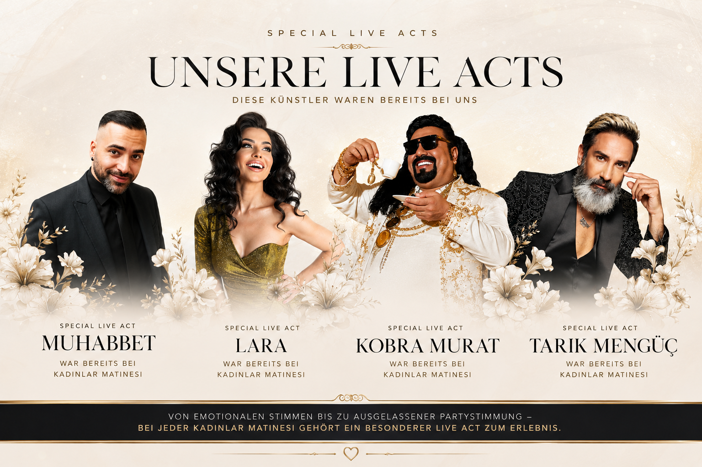

Tickets & Updates
Beim nächsten Event dabei sein.
Tickets, Termine und aktuelle Informationen zu KADINLAR MATINESI veröffentlichen wir über unsere Instagram-Seite.
LEITFADEN MEDIA · Eventformat
Ein Tag nur für Frauen – voller Musik, Begegnung, Shopping, Genuss und gemeinsamer Zeit. Zweimal im Jahr bringen wir Frauen in Nürnberg zusammen und schaffen einen Raum, in dem gefeiert, entdeckt, gelacht und einfach genossen werden darf.
Das Erlebnis
KADINLAR MATINESI ist eine Tagesveranstaltung von Frauen für Frauen. Unsere türkische Frauen-Community liegt uns besonders am Herzen – gleichzeitig ist bei uns natürlich jede Frau herzlich willkommen.
Unser Sommer-Event findet traditionell rund um den Muttertag in der Eventhalle Gartenstadt Nürnberg statt. Im Winter folgt eine zweite Ausgabe mit eigener Stimmung, neuen Highlights und derselben Idee: zusammenkommen, abschalten und sich einen besonderen Tag gönnen.
Es gibt feste Sitzplätze und vor Ort können Speisen und Getränke dazugekauft werden. Unser Ziel ist ganz einfach: Ihr sollt ankommen, euch wohlfühlen und euch von uns verwöhnen lassen – denn an diesem Tag seid ihr unter euch.
Was euch erwartet
Von Schmuck, Parfüm, Beauty, Make-up und Gesichtsbehandlungen über Pilates, Technik, Wasserfilter, Handyschmuck und Trenddrinks bis hin zu vielen weiteren Verkaufs- und Informationsständen gibt es den ganzen Tag etwas zu entdecken.
Special Live Acts
Ein Highlight jeder Ausgabe ist unser Special Live Act. Gemeinsam mit Live-Band und DJ entstehen besondere Momente, die jede KADINLAR MATINESI einzigartig machen.

Tickets & Updates
Tickets, Termine und aktuelle Informationen zu KADINLAR MATINESI veröffentlichen wir über unsere Instagram-Seite.
Partner & Sponsoren
Du möchtest dein Unternehmen, deine Marke oder dein Angebot bei KADINLAR MATINESI präsentieren? Wir freuen uns über passende Partner, Sponsoren sowie Verkaufs- und Informationsstände.